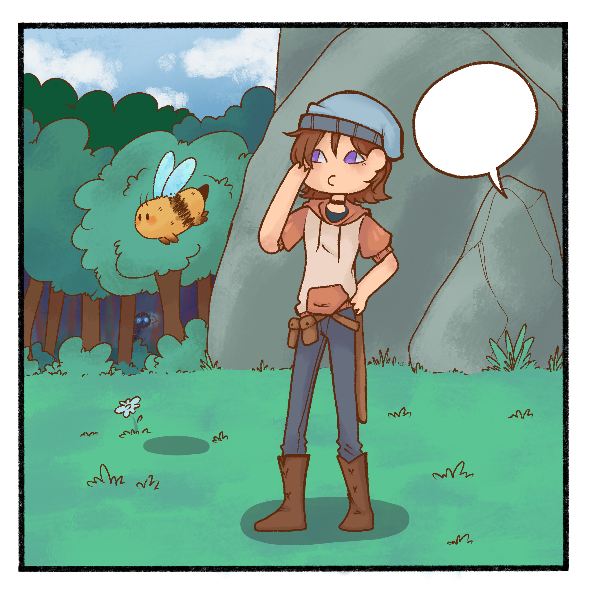
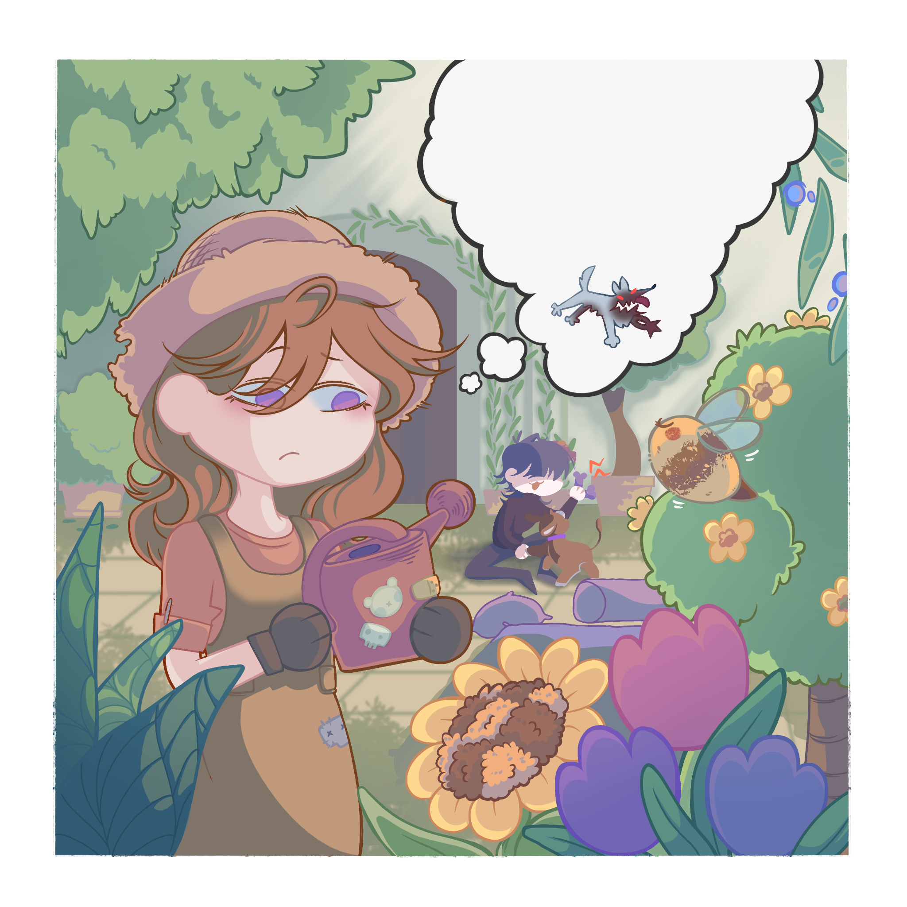
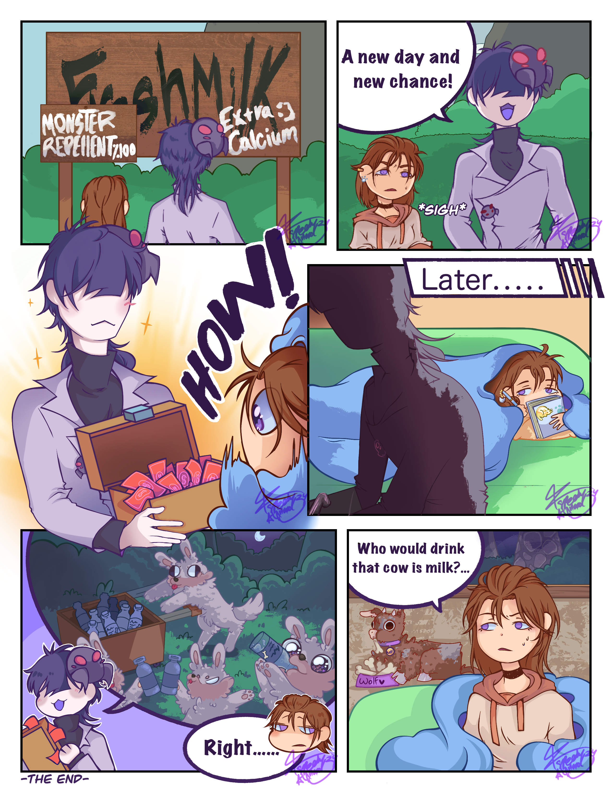

“Comics are pictures and words. You can tell any story with them.”— Jeff Smith

Anu Dev
Creative Coder & Designer
UTAS University
Passionate about UI, coding, and storytelling through clean code.


Visual work demands more than just artistic skill—it requires a deep understanding of motion and narrative. From the timing of a blink to the framing of a single scene, every element contributes to the final emotion. These layers of detail are what make animation so rewarding to me.
I never imagined I’d be creating animation as a solo artist. It takes structure, clarity, and courage to animate from scratch. Every frame must connect with the next, and each decision must support the story. Today, I also contribute to a volunteer animation team called Veully, where we share that challenge together.
My comics reflect my growth. Each one was made in a different year, capturing a
different skill level and mindset.
In storytelling, even still images can move people.


